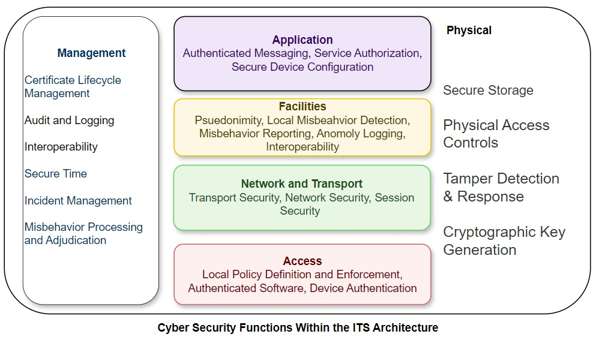
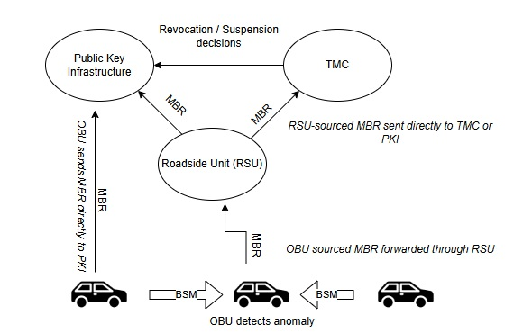

ITS Security Architectures¶
This section describes a multi-layered ITS cybersecurity architecture that may be used to address threats in an ITS system of systems. Each layer integrates relevant standards, technologies, and governance models to ensure security across devices, communications and backend services. These layers work together to protect against spoofing, credential misuse, unauthorized access, physical tampering, data exfiltration, and message manipulation. The figure below illustrates a conceptual layered architecture for ITS cybersecurity. Each layer builds upon the previous to support trusted operation of devices, networks, and applications.

Physical Layer¶
The Physical Layer provides protections for field-deployed and centralized ITS assets. It addresses threats enabled through direct physical access to hardware such as including unauthorized device manipulation, cryptographic key theft, and sabotage. Devices such as RSUs, OBUs and cabinet-based controllers operate in exposed environments that make them vulnerable to attack, especially if not physically secured. Backend systems such as Traffic Management Centers (TMCs) must also be secured, using strong facility protections to guard against unauthorized access.
Physical Layer Cybersecurity Objectives¶
Cybersecurity objectives for the physical layer include:
- Prevent unauthorized physical access to devices and infrastructure
- Protect cryptographic materials (e.g., private keys, firmware signatures) from extraction or tampering
- Ensure authenticity and integrity of firmware and hardware configurations
- Deter and detect tampering or sabotage
- Support traceability and accountability through access logging and auditability
- Provide secure boundaries to ensure devices operate only in authorized physical and network contexts (e.g., school bus OBU must only be installed in a school bus)
Physical Layer Threat Examples¶
| Threat Example | Description |
|---|---|
| Unauthorized cabinet access | Attackers gain access to RSU or controller enclosures to manipulate configurations, install rogue devices, or extract sensitive data. |
| Cryptographic key extraction | Attackers extract private keys from unsecured OBUs or RSUs using exposed memory or interfaces. |
| Device cloning or hardware swaps | Physical removal of trusted units and replacement with malicious devices impersonating the original identiy. |
| Unauthorized firmware upload | Use of USB, serial, or debug ports to install unsigned or malicious firmware. |
| Sensor spoofing or blinding | Attackers interfere with radar, video, or Global Positioning Sytstem (GPS) sensors using external signals. |
| Sabotage | RSUs or cabinets are damaged or degraded through vandalism or non-adversarial means. |
Physical Layer Mitigation Strategies¶
To counter these threats, ITS architectures apply a layered approach that combines hardware protections and firmware/interface security.
Physical Access Control and Monitoring¶
To prevent unauthorized access, RSUs, signal controllers, and field cabinets should be enclosed in tamper-resistant housings with alarmed locks, sealed entry points, and environmental monitoring sensors. Physical keys or electronic access controls must be tightly managed under documented procedures, and access events should be logged and reviewed regularly. For backend infrastructure (e.g., TMCs), access should be gated by badge readers, monitored entry points, and facility-level intrusion detection.
Secure Hardware and Cryptographic Protection¶
All devices that handle cryptographic material (e.g., OBUs, RSUs) should store keys in non-exportable formats using secure elements, Trusted Platform Modules (TPMs), or Hardware Security Modules (HSMs). These components should be validated under FIPS 140-3 or ISO/IEC 19790 (Security Techniques for cryptographic modules) and configured to perform cryptographic operations within isolated hardware. Devices must support tamper response features that erase keys or disable functionality if physical compromise is detected.
Firmware and Interface Security¶
Firmware must be cryptographically signed and verified at boot (secure boot), and all debug, USB, and serial interfaces should be disabled or locked before deployment. Any firmware updates should occur only through authenticated channels that verify digital signatures and validate version histories. Over-the-air (OTA) firmware update workflows should be authenticated using certificates.
Sensor Hardening and Redundancy¶
ITS sensors (e.g., cameras, radar, GNSS modules) should be shielded where feasible and configured to detect anomalies such as implausible data ranges.
Network and Transport Layer¶
The Network and Transport Layer secures the communication channels that carry ITS/V2X data across both wireless and wired infrastructures. This includes V2X communications between vehicles and RSUs, as well as data flows between field devices and backend systems. The primary function of this layer is to ensure that data in transit is protected against tampering, interception, and unauthorized injection, while also enforcing device authentication and ensuring service availability under adverse conditions.
Standards such as IEEE 1609.3 define network and transport protocols for Wireless Access in Vehicular Environments (WAVE), while IEEE 1609.2 and ETSI TS 103 097 provide cryptographic protections through digital signatures and encryption for V2X messages. Backend communications are typically secured using Transport Layer Security (TLS 1.3), often with mutual authentication.
Network and Transport Layer Cybersecurity Objectives¶
- Assure message integrity and authenticity using cryptographic signatures
- Protect confidentiality of sensitive data in transit (e.g., Basic Safety Message (BSMs), certificate requests)
- Authenticate devices and services to prevent spoofing or impersonation
- Prevent unauthorized message injection or modification
- Maintain availability of communication channels
Network and Transport Layer Threat Examples¶
| Example | Description |
|---|---|
| Message injection | Attackers send spoofed or malformed messages. |
| Eavesdropping | Passive attackers intercept V2X or backend messages to obtain sensitive information or gain situational awareness. |
| Man-in-the-middle (MITM) | An attacker inserts themselves between devices to relay or modify communications while impersonating trusted parties. |
| Replay Attacks | Previously valid V2X messages are resent by attackers to mislead vehicles or systems. |
| Denial-of-Service (DoS) | Flooding of wireless or wired interfaces disrupts availability of critical ITS messages. |
| Certificate spoofing | Attackers present forged credentials or reuse compromised certificates to authenticate malicious devices. |
| Vehicle tracking | Passive observers collect and correlate V2X messages (e.g., BSMs) to track vehicles over time or infer personal behaviors. |
Network and Transport Layer Mitigation Strategies¶
To counter these threats, ITS architectures introduce authenticated and encrypted messaging, permissions-based enforcement, strict certificate enrollment policies and procedures, and pseudonymity and anonymity protections.
Authenticated Messaging¶
All V2X messages must be digitally signed to ensure authenticity and integrity. Standards such as IEEE 1609.2.1 and ETSI TS 103 097 define the format for secure message headers, including certificate linkage, timestamps, and replay protection. Devices that cannot validate signatures should discard the message and optionally report the event to backend systems.
Encryption¶
While most V2X safety messages are signed but not encrypted, sensitive messages such as those containing traveler data or backend system configurations should be encrypted in transit. Protocols such as TLS 1.3 should be used for all backend communications between RSUs, TMCs, and service providers. For SCMS certificate requests and policy downloads, encryption ensures confidentiality of device identity.
Pseudonymity and Anonymity Protections¶
Pseudonymity protections are designed to prevent vehicles and infrastructure devices from being persistently identified or tracked based on their V2X transmissions. Rather than using a static identity, each device is issued a set of short-term, unlinkable certificates—known as pseudonym certificates—that are rotated frequently. These protections are important to preserve user privacy in connected vehicle environments. Without effective pseudonymity, passive observers could correlate message patterns, locations, and timing to reconstruct vehicle trajectories, profile driver behavior, or infer organizational activities. To mitigate these risks, devices must rotate pseudonym certificates at regular intervals.
Application Layer¶
The Application Layer is responsible for enabling defined transportation functions, such as signal priority, lane coordination or incident warning. Applications are standardized, certificate-bound services identified by globally or regionally assigned IDs (AAID or PSID) implemented according to strict message structures and access policies. Applications interact with other ITS components using defined message types from standards like SAE J2735 and ETSI EN 302 637-x, and are identified and authorized via Provider Service Identifiers (PSIDs) and Service-Specific Permissions (SSPs).
Application Layer Cybersecurity Objectives¶
- Restrict application use to authorized roles, based on device certificates and SSP constraints
- Prevent unauthorized message injection or misuse of safety-critical applications
- Ensure integrity of software through code signing and runtime protections
- Protect applications from unauthorized modification or third-party exploitation
- Support regional and operational deployment constraints, such as geofencing or time-restricted usage
Application Layer Threat Examples¶
| Threat Example | Description |
|---|---|
| Unauthorized message injection | A non-authorized OBU transmits Signal Request Messages (SRMs) to manipulate traffic signals. |
| Role escalation | A vehicle with general-use permissions reuses or fabricates SSP fields to impersonate an emergency responder. |
| Tampered application logic | Malware or modified code causes an ITS device to transmit false warnings or suppress valid messages. |
| Improper deployment (jurisdictions) | A certified application is installed outside its permitted geographic zone or agency scope. |
| Unauthorized third-party software execution | A device runs unapproved or unsigned applications due to weak software controls or side-loading. |
Application Layer Mitigation Strategies¶
Application Permissions and Authorization Controls¶
In connected vehicle systems, application-level permissions are managed through values embedded in digital certificates such as the PSID, which identifies a specific application (e.g., signal priority request), and the SSP, which define what actions a device is authorized to perform within that application. For example, a transit vehicle’s Onboard Unit (OBU) may have a certificate that includes the PSID for the Signal Request Message (SRM) application and an SSP indicating it is authorized to request transit signal priority at intersections. OBUs and RSUs should enforce these permissions when transmitting or receiving messages. Applications should only initiate communication for services they are explicitly authorized for, and roadside infrastructure (e.g., RSUs) must validate both PSID and SSP on incoming messages.
Policy Management¶
Many ITS applications operate under local or regional policies configured by ITS Station Operators (SO) that define where, when, and by whom an application may be used. These rules complement certificate-bound permissions and are defined through deployment policy frameworks implemented by jurisdictions, infrastructure owners, or certificate authorities. Polices may be enforced at multiple points in a system and may be implemented through mechanisms such as geofencing, SSP-encoding, infrastructure logic, and credential life-cycle controls. These mechanisms ensure that applications are not only cryptographically authorized, but also contextually constrained to operate within their intended scope.
Trust and Identity Layer¶
The Trust and Identity Layer defines how secure identities are established, validated, and managed throughout the lifecycle of ITS devices and services. This layer underpins all secure communications in ITS environments by maintaining a chain of trust across jurisdictions, devices, and infrastructure. Infrastructures such as North America’s SCMS architecture or Europe’s CCMS, are used to ensure that only properly authenticated entities are authorized to participate in V2X communications.
Trust and Identity Layer Cybersecurity Objectives¶
- Establish a root of trust for all participants in the ITS environment.
- Control enrollment into certificate management systems through device validation.
- Manage certificate issuance and revocation according to strict lifecycle rules.
- Ensure compliance with technical standards and operational policies.
- Enable governance structures (e.g., Electors) to manage trust at scale.
- Support secure multi-jurisdictional interoperability.
Trust and Identity Threat Examples¶
| Example | Description |
|---|---|
| Unauthorized enrollment | A device is enrolled into a certificate management system without meeting security or compliance requirements. |
| Key compromise | The private key associated with a trusted certificate is extracted or duplicated, allowing impersonation of a legitimate device. |
| Improper trust anchor update | A CTL update is manipulated and distributed without proper signatures. |
| Stale or missing revocation data | Deivces fail to download updated CRLs or CTLs and continue to trust revoked or expired entities. |
| Enrollment policy evasion | An attacker submits a non-compliant device for enrollment. |
| Role escalation using certificate | A certificate is issued with overly broad SSPs, granting the device capabilities beyond its operational role. |
Trust and Identity Mitigation Strategies¶
Root of Trust Management¶
Certificate management systems such as the SCMS and CCMS provide mechanisms for managing trust within a domain. These systems manage the lifecycle of trust anchors, validate root and intermediate certificate authorities, and enforce policies that define how trust decisions are made, distributed, and revoked across participating entities. In SCMS, Electors play a key role in maintaining the Certificate Trust List (CTL). A quorum of Electors must collectively sign a MultiSignedCTL, which serves as the definitive list of trusted roots and system components. This prevents unilateral changes to the trust structure and ensures that updates are the result of multi-party agreement. Similarly, in Europe’s CCMS, trust is managed through the CPOC process, where new Root CAs are approved and registered through coordinated member state oversight and publishing of the CTL.
Enrollment Policy and Enforcement¶
Certificate enrollment requires that entities such as OBUs, RSUs and backend systems meet specific end-entity (EE) requirements. These requirements ensure that EEs are capable of securely operating within the transportation system, and may cover topics such as secure key storage, use of FIPS 140-3 validated cryptographic modules, and firmware security. EEs may also be required to undergo testing to determine compliance with any published certificate management system policies.
Certificate Lifecycle Controls¶
Certificate lifecycle controls define how digital credentials are issued, updated, rotated, and revoked. These controls ensure that certificates are managed in accordance with cryptographic standards and policy requirements. Certificates are issued by authorized SCMS or CCMS Providers based on strict identity vetting, device compliance, and enrollment validation. Each certificate binds a public key to a role-specific identity (e.g., OBU, RSU, backend service), along with associated permissions and usage constraints. Certificate issuance procedures must be documented in the certificate management service providers' CP and /or CPS. These policies should also detail update and rotation frequencies for different types of certificates as well as revocation processes and procedures.
Misbehavior Detection and Response Layer¶
The Misbehavior Detection and Response Layer provides runtime protections against compromised, faulty, or malicious ITS devices by identifying deviations from expected behavior and enabling responsive countermeasures. It plays an important role in maintaining trust across an ITS system of systems. This layer processes data transmitted from vehicles and infrastructure to detect security anomalies and protocol violations. It supports the submission, analysis, and response to Misbehavior Reports (MBRs), which are structured records of suspicious behavior generated by peer devices such as RSUs. This layer enables revocation or suspension decisions via a credential management system. The figure below illustrates a high level misbehavior detection and response system.

Misbehavior Detection and Response Cybersecurity Objectives¶
- Detect falsified or anomalous message content in real-time to identify compromised or malfunctioning devices.
- Validate behavioral consistency across space and time, such as physical plausibility of location, speed, and trajectory data.
- Enable revocation or remediation workflows tied to validated misbehavior events.
Threat Examples¶
| Threat Example | Description |
|---|---|
| Falsified BSMs | A vehicle transmits location data inconsistent with plausible movement, affecting other vehicles' path planning. |
| Unauthorized signal requests | A device sends SRMs)without entitlement or in implausible patterns. |
| Replay attacks | A recorded V2X message is retransmitted to mislead infrastructure or vehicles. |
Detection and Mitigation Strategies¶
Message Behavior Analysis¶
Misbehavior detection systems analyze message content and transmission patterns in real time. For example, a Basic Safety Message (BSM) that shows a sudden location jump inconsistent with the speed field or recent trajectory history may trigger a flag.
Misbehavior Reporting¶
When suspicious behavior is detected, devices or infrastructure generate MBRs that describe:
- The observed event
- Supporting evidence (e.g., signed messages, timestamps, locations)
- Source of the report.
Structured ASN.1 formats are being standardized to support common data exchange and validation.
Response Actions¶
Once validated, confirmed misbehavior can trigger a range of responses, including:
- Certificate Revocation
- Temporary Suspension